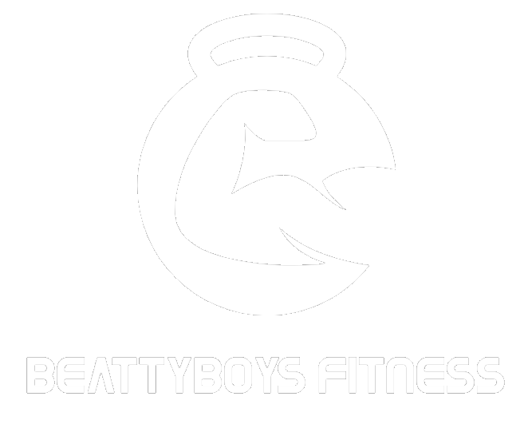

The calf raise is an often ignored excercise but a crucial one. The calf raise targets the gastrocnemius (the large calf muscle) and the soleus (the small calf muscle). If the calf raise is ignored it can cause a serious aesthetic imbalance between the thigh and calves.
Step 1: Position yourself on a leg press machine with only the top half of your foot being on the platform ensuring not to lock your knees.
Step 2: Push the platform away from you as if you were going to stand on your toes. Hold this position for about 2 seconds.
Step 3: Allow the platform to come towards you by reversing the movement and allowing your foot to make a 80 degree angle with your shin.